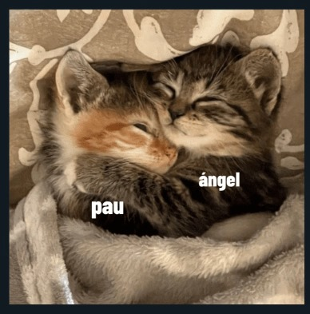

para mi princesa pau
Abre cualquier opcion enojona:
contenido de lectura para ti preciosa
QUERIDA PAULINA< 3: me dijiste que escribiera algo memorable, asi que lo hice. mi recuerdo de la primera vez que te vi o como lo tu lo llamas "nuetro bello click", fue en un live todo cagado de tik tok estabas viendome como jugaba cualquier clase de juegos y vi tu nombre en el chat con tu foto toda randi de perfil, cuando por fin nos empezamos a hablar bien fue un dia cualquiera para jugar roblox y nunca me ganaste en vestirse bien, lo recuerdo muy bien que siempre quedabas en 3er lugar, seimpre te tiraba cuando perdias por que era mi forma de llamar tu atencion pero tu solo lo tomabas como broma, despues de eso te invitaba a ver peliculas para hacercarme mas a ti hasta que por fin empezamos a tener confianza uno con el otro. lo recuerdo muy bien, empezamos a jugar roblox y termino en peliculas un 20 de septiembre, nos tomamos fotos atetis e incluso me hiciste un simp donde decia "PxA". Hasta en discord me lo puse y cuando me lo quite te enojaste pero como soy hombre que resuelve lo pude resolver, y cuando por fin decidimos ser virtuales estaba todo bien, me daba mucha cura como intentabas pasarte un juego todo cagado de roblox mientras que yo solo te veia como lo intentabas una y otra vez, ese dia fue uno de los mejores, hasta que tuvimos una discucion pero como buen hombre que resuelve, te marque estando hasta pedo pero nunca respondiste mi llamada pero ese mensaje que me llego tuyo me dio la señal que todavia podia arreglar las cosas entre tu y yo y asi fue, gane tu confianza de nuevo pero claro somos virtuales y se que probablemente nunca nos podremos conocer pero igual fue algo lindo compartir sentimientos, me abri mucho contigo contandote mi pasado y me aconsejaste de ser mejor poersona y gracias a eso supe valorar las pequeñas cosas que tengo en la vida, gracias a ti y se que probablemente nunca o rara vez volvamos a hablar como antes pero igual fue una linda experiencia estar con una persona como tu sabes, muchas cosas que aportaste a mi vida, aunq las desveladas cuando me iba a la prepa nadie me las quita pero fue una experiencia que la verdad no me arrepiento de haber pasado, pero de todas formas quiero que sepas que te quiero mucho pau por que se que no te gusta que te llamen paulina niña enojona, buenas noches y descansa.<3
el sticker de los gatitos todos lindos que hiciste o hicieron como me fascinaba

mi ojitos lindos como me gustaban esos hermosos ojitos😍